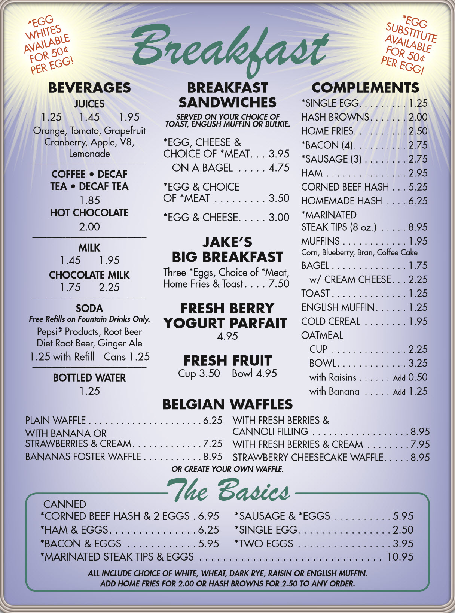
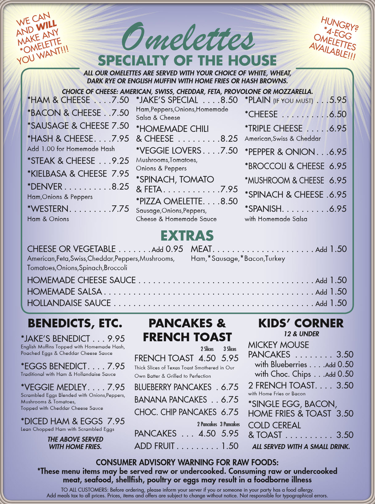
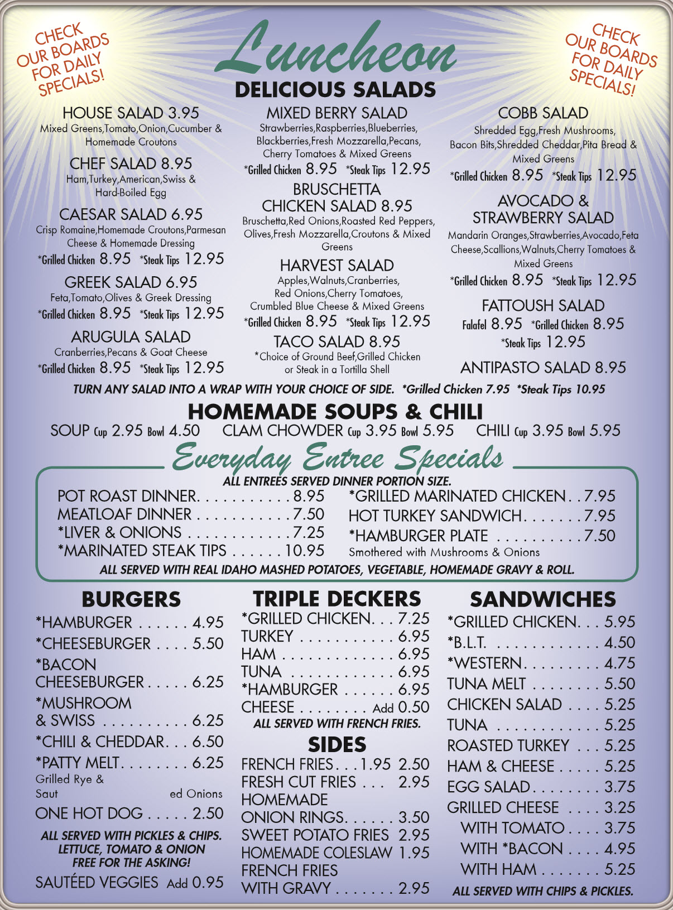

Next
Previous



Building a slideshow like pattern that can accurately cycle through a number of unknown divs, forwards and backwards. Trying to use as little code as possible. Leave a comment if you see a way to do it better!